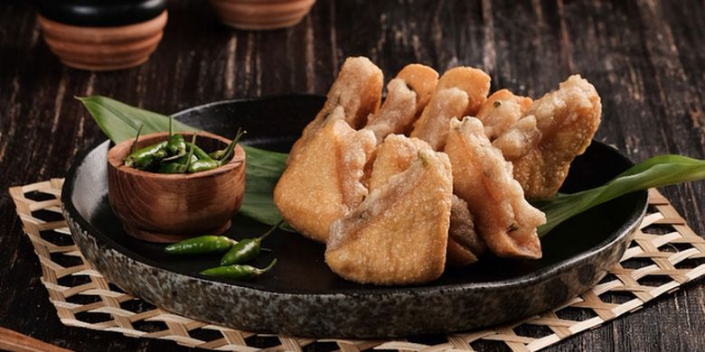
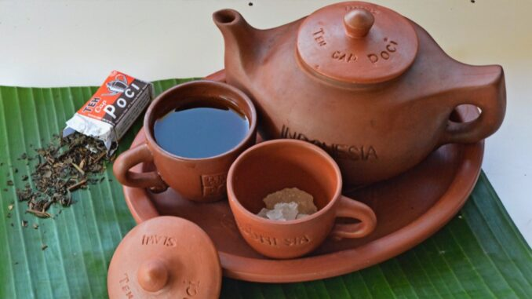
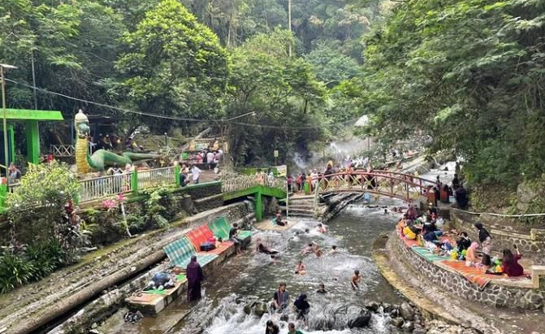
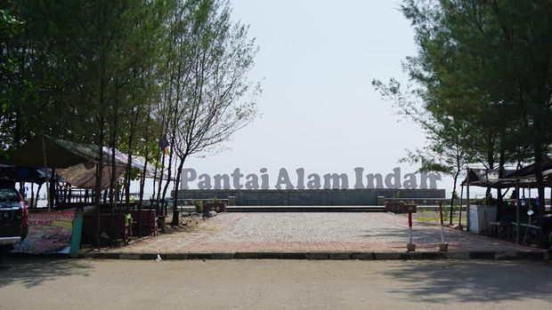

Makanan

Tahu aci merupakan makanan khas dari daerah Kabupaten Tegal yang sering dijadikan oleh – oleh bagi orang yang berkunjung ke Tegal. Tahu aci ini berasal dari tahu kuning khas Tegal yang dipotong secara diagonal dan pada bagian tengah diisi dengan adonan tepung kanji, potongan daun kucai dan bumbu. Cara penggorengannya pun cukup unik, selain menggunakan minyak goreng yang cukup banyak dan kompor yang menyala besar, minyak goreng yang dipakai juga menggunakan minyak goreng yang sering dipakai untuk menggoreng tahu aci, karena konon hal ini yang membuat tahu aci semakin lezat. Pemerintah Kabupaten Tegal mendeirikan patung tahu aci yang terletak di perempatan Slawi Jalan Gatot Subroto, sebagai tanda tempat tersebut merupakan pusat tahu aci yang berada di daerah Slawi.
Minuman

Teh Poci sudah menjadi minuman wajib jika berkunjung ke Kota Tegal. Teh Poci sangat digemari karena rasanya yang khas dan membuat ketagihan karena disajikan dengan teko tanah liat menambah aroma teh alami yang kuat dan harum. Kota Tegal terkenal dengan tradisi Nyipok (Moci Karo Ndopok) yang artinya menikmati teh poci sambil santau dan ngobrol dengan keluarga atau teman-teman terdekat akan semakin menciptakan suasana keakraban.
Wisata
Tak hanya terkenal akan kulinernya, kabupaten di pesisir utara pulau Jawa ini juga mempunyai beragam destinasi wisata menarik. Objek wisata ini cocok kamu jadikan referensi untuk libur panjang bersama keluarga maupun teman.
Pemandian Air Panas guci

Pemandian air panas ini merupakan destinasi wisata yang berada di bawah kaki Gunung Slamet. Wisata ini menyuguhkan pemandian air panas alami serta pemandangan dan udara sejuk pegunungan. Lokasinya berada di Desa Guci, Kecamatan Bumijawa, Tegal, yang memakan waktu kurang lebih 2 jam dari pusat kota. Lokasinya yang tenang dan jauh dari hiruk-pikuk kota membuatnya menjadi tempat pelarian yang populer. Di sini, pengunjung dapat merendam diri di kolam-kolam air panas yang mengalir dari sumber alam. Selain itu, air panas ini dikenal memiliki kandungan mineral yang bermanfaat bagi kesehatan kulit dan tubuh.
Pantai Alam Indah

Pantai Alam Indah atau dikenal oleh penduduk setempat dengan nama Pai Tegal kerap dijuluki surganya kota Tegal. Pantai ini menyuguhkan pesona keindahan alam yang cocok dinikmati bersama keluarga dan teman.
Objek wisata pantai Alam Indah berada di kelurahan Mintaragen, Kecamatan Tegal Timur, Tegal, tepatnya di pinggir Jalur Pantura. Akses ke pantai terbilang relatif mudah hingga membuatnya menjadi tempat favorit bagi warga lokal maupun wisatawan.